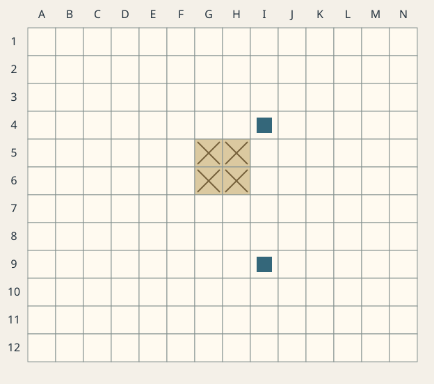

Одинаковые правила, разная история
Все карты совпадают с сеткой нативного пакета: 14 × 12, клетка — 5 футов. G5/H5/G6/H6 — трудная местность; I4/I9 — половинное укрытие. Остальные детали описания декоративны, пока ведущий не изменил поле штатно.
Расстановка и параметры
Герои по порядку: B3, B4, B5, B6, C3, C4, C5. Противники: L3, L4, L5, L6, M3. Используйте только нужное число фигур.
Для 3 / 4 / 5 / 6 / 7 игроков: 2 / 3 / 3 / 4 / 5 противников, здоровье каждого 12 / 14 / 16 / 18 / 20. Защита 12; скорость 20 футов; одна ближняя атака +3, 1d4+1 дробящего урона, досягаемость 5 футов.
Враги — простая поддерживаемая модель. Мирные решения и ограничения сцены описаны отдельно; ведущий подтверждает их результат. После первого раунда напомните пути переговоров или отступления. Встречи не запускаются автоматически.
Смотрители учебного опыта
Только если игроки добровольно выбирают сценическую пробу с сопротивлением и ведущий отдельно объявляет начало встречи; открытие ящика или отказ от разговора сами бой не запускают.
Цель и выходы
Добраться до открытого рабочего стола и показать свою карточку условий. Можно отступить за широкую дверь, остановить опыт или договориться о другой роли; спасать людей от смертельной угрозы не требуется.
Произнести или показать записанный сигнал «остановка опыта»; Никса выключает сценическое сопротивление, и реквизит освобождает путь. Можно также пройти бумажную версию задачи на общем столе без встречи и получить ту же улику.
Поведение противников
Мягкая складная фигура в бумажном жилете с тупым сценическим указателем. Это музейный реквизит, описанный через обычного противника, без особых временных сил.
Смотрители стоят у разных проходов и используют только движение и обычную ближнюю атаку. Не окружают одного героя, не преследуют за дверью и не меняют инициативу или память. При завершении объявленной учебной цели ведущий заканчивает сцену.
Размер группы
3 игрока: 2 смотрителя по 12 HP; 4: 3 по 14; 5: 3 по 16; 6: 4 по 18; 7: 5 по 20. У всех AC 12, одна ближняя атака +3, урон 1d4+1. При 3 игроках оставьте один широкий обход; при 6–7 разместите добавленных у дальних столов, чтобы каждый мог выбрать отдельный путь.

↔ На узком экране прокрутите карту вбок. Полный размер доступен по ссылке ниже.

Поле 14×12. Мягкие упаковки занимают только G5, H5, G6, H6: это трудная местность. Верстаки в I4 и I9 дают укрытие наполовину. Стол цели у северного края, вход с запада; остальные упаковки декоративны. Свободны обходы по верхнему и нижнему краям.
Репетиция слишком совершенных ролей
После чтения общественного письма игроки могут выбрать сценическую встречу с манекенами; она начинается лишь по явному выбору группы и объявлению ведущего.
Цель и выходы
Положить карточку «отдыхаю» на пустой стул, показывая право завершить роль. Отступление в общий коридор или остановка представления сохраняет все найденные письма и не означает сюжетного поражения.
Сказать «я заканчиваю роль» или показать карточку отдыха. Сава прекращает репетицию, после чего можно разыграть обмен ролями словами. Победа в бою не требуется ни для письма, ни для права отказаться.
Поведение противников
Тканевый манекен с нарисованной улыбкой и мягкой тростью; изображает преувеличенно усердного учителя. Не является будущей версией героя и ничего о нём не знает.
Исполнители по одному перекрывают подходы к стулу и пользуются лишь обычными движением и ближней атакой. Не удерживают героя в роли, не накладывают состояний и прекращают преследование у выхода.
Размер группы
3 игрока: 2 исполнителя по 12 HP; 4: 3 по 14; 5: 3 по 16; 6: 4 по 18; 7: 5 по 20. У всех AC 12, одна ближняя атака +3, урон 1d4+1. Для 3 игроков стул виден прямо от входа; для 6–7 добавленные фигуры стоят у разных ширм, оставляя два пути.
↔ На узком экране прокрутите карту вбок. Полный размер доступен по ссылке ниже.

Поле 14×12. Мягкие декорации в G5, H5, G6, H6 являются трудной местностью. Две ширмы в I4 и I9 дают укрытие наполовину. Стул у северного открытого прохода, выход с запада. Остальные декорации не добавляют трудных клеток или укрытий.
Подвижные витрины
При добровольной репетиции перестановки герои могут включить игровой режим сопротивления тележек; ведущий начинает встречу отдельно, а обычная перестановка остаётся мирной.
Цель и выходы
Провести хотя бы одного участника к общей скамье через свободный проход или остановить репетицию. Успех показывает работающий маршрут, но не доказывает выполнимость всех обещаний. Можно уйти к краю площадки и продолжить на бумажном плане.
Попросить Никсу выключить игровой режим или показать общий сигнал остановки. Можно договориться о ручной перестановке пустых столов и проверить тот же проход без противников; неудачный бой не отнимает право открыть настольную выставку.
Поведение противников
Невысокая музейная тележка с мягкими бортами и нарисованными глазами. Её сценический толчок использует обычную ближнюю атаку, без перемещения цели или дополнительных эффектов.
Тележки распределяются у разных столов, двигаются и атакуют только обычным способом. Не закрывают выход целиком, не пользуются временными скачками и не атакуют ушедших с площадки. При остановке опыта реквизит замирает по решению ведущего.
Размер группы
3 игрока: 2 тележки по 12 HP; 4: 3 по 14; 5: 3 по 16; 6: 4 по 18; 7: 5 по 20. У всех AC 12, одна ближняя атака +3, урон 1d4+1. При 3 игроках оставьте широкий край; при 6–7 добавьте цели для переговоров у разных столов, не усиливая атаки.
↔ На узком экране прокрутите карту вбок. Полный размер доступен по ссылке ниже.

Поле 14×12. Складные коврики в G5, H5, G6, H6 создают трудную местность. Пустые витрины в I4 и I9 дают укрытие наполовину. Круглая скамья у северного края, вход с запада; обход вдоль южного края свободен. Остальные предметы декоративны.